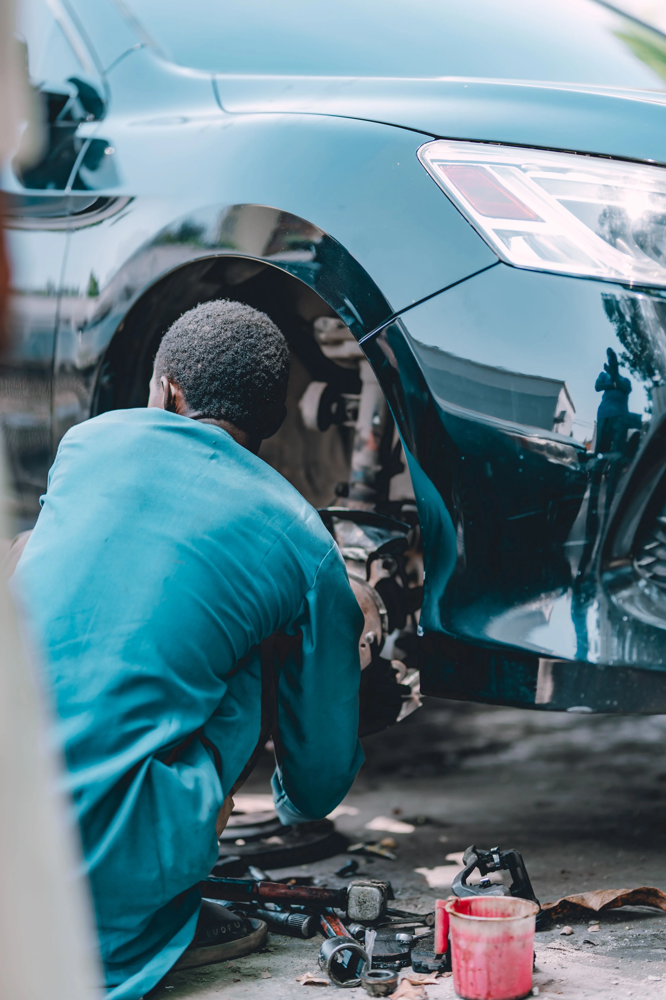

Hybrid බැටරි සේවා
බැටරියේ තත්ත්වය පරීක්ෂා කර, අලුත්වැඩියාව, නැවත සකස් කිරීම හෝ ප්රතිස්ථාපනය පිළිබඳව ගැළපෙන විකල්ප සාකච්ඡා කරන්න.
- බැටරි තත්ත්ව පරීක්ෂාව
- මොඩියුල පරීක්ෂාව හා සමතුලිත කිරීම
- සිසිලන පද්ධතිය පරීක්ෂා කිරීම

CCS SOLUTIONS / HYBRID CARE
Hybrid බැටරි, ABS සහ දෝෂ පරීක්ෂණ සේවා. ඔබේ රථයේ ගැටලුව හඳුනාගෙන, ගැළපෙන ඊළඟ පියවර ගැන අපි කතා කරමු.
රාගම, ශ්රී ලංකාව 071 793 7011
අපගේ විශේෂඥ සේවා
ගැටලුව නිවැරදිව හඳුනා ගැනීමෙන් අලුත්වැඩියාවක් සඳහා පැහැදිලි ආරම්භයක් ලබා ගන්න.
බැටරියේ තත්ත්වය පරීක්ෂා කර, අලුත්වැඩියාව, නැවත සකස් කිරීම හෝ ප්රතිස්ථාපනය පිළිබඳව ගැළපෙන විකල්ප සාකච්ඡා කරන්න.

ABS අනතුරු ඇඟවීම්, තිරිංග ක්රියාකාරීත්වයේ වෙනස්කම් හෝ අසාමාන්ය ශබ්ද තිබේ නම්, වැඩමුළුව සමඟ පරීක්ෂාවක් සැලසුම් කරන්න.
දෝෂ කේත සහ අදාළ විදුලි පරීක්ෂණ මඟින් ගැටලුව හඳුනා ගැනීමට සහ ඊළඟ පියවර තීරණය කිරීමට සහාය ලබා ගන්න.
අපගේ ක්රමවේදය
ඔබට පෙනෙන ලක්ෂණවලින් ආරම්භ කර, රථයට අවශ්ය අවධානය ගැන පැහැදිලිව සාකච්ඡා කරන්න.
රථ මාදිලිය, දැල්වෙන අනතුරු ඇඟවීම් සහ ඔබට දැනුණු වෙනස්කම් අපට දන්වන්න.
වැඩමුළුව සමඟ දිනයක් සහ වේලාවක් තහවුරු කරගෙන රථය රැගෙන එන්න.
පරීක්ෂණ ප්රතිඵල, අලුත්වැඩියා විකල්ප, වියදම් සහ අදාළ වගකීම ගැන විමසන්න.
නිතර අසන ප්රශ්න
එය තීරණය කළ හැක්කේ රථය සහ බැටරිය පරීක්ෂා කිරීමෙන් පසුවයි. අලුත්වැඩියාව, නැවත සකස් කිරීම සහ ප්රතිස්ථාපනය පිළිබඳව වැඩමුළුව සමඟ සාකච්ඡා කරන්න.
වගකීම අදාළ සේවාව, කොටස සහ ලිඛිත කොන්දේසි අනුව වෙනස් විය හැක. වැඩ ආරම්භ කිරීමට පෙර අදාළ වගකීමේ ආවරණය සහ කොන්දේසි තහවුරු කර ගන්න.
රථ මාදිලිය, නිෂ්පාදිත වර්ෂය සහ ඔබ දැක ඇති දෝෂ ලක්ෂණ දන්වන්න. හැකි නම් අනතුරු ඇඟවීම් පෙන්වන ඡායාරූපයක් ද WhatsApp මඟින් එවන්න.
ඔබේ ඊළඟ පියවර
පරීක්ෂාවක් හෝ අමතර කොටසක් ගැන විමසීමට අප අමතන්න. පැමිණෙන දිනය සහ වේලාව වැඩමුළුව විසින් තහවුරු කරනු ලැබේ.